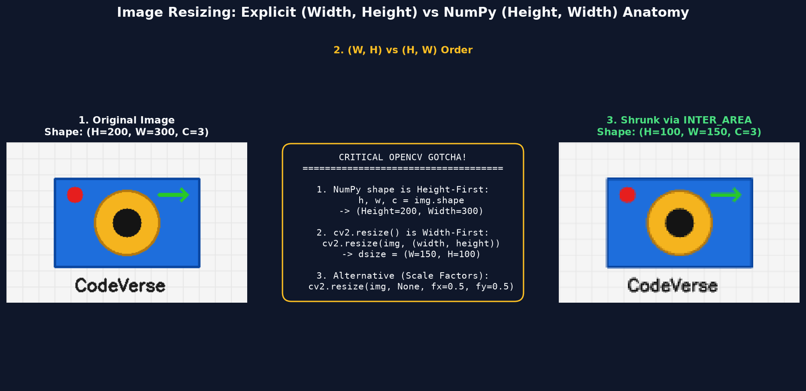
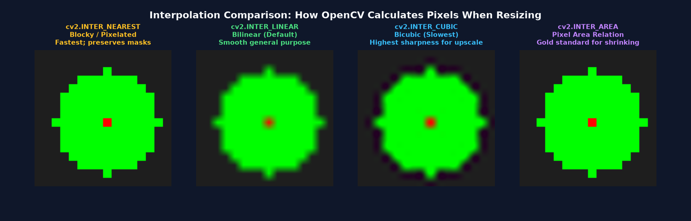
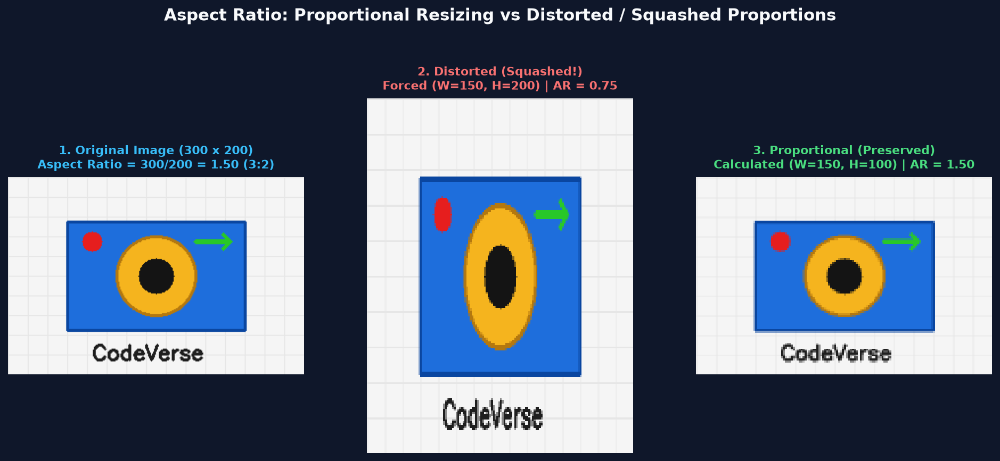
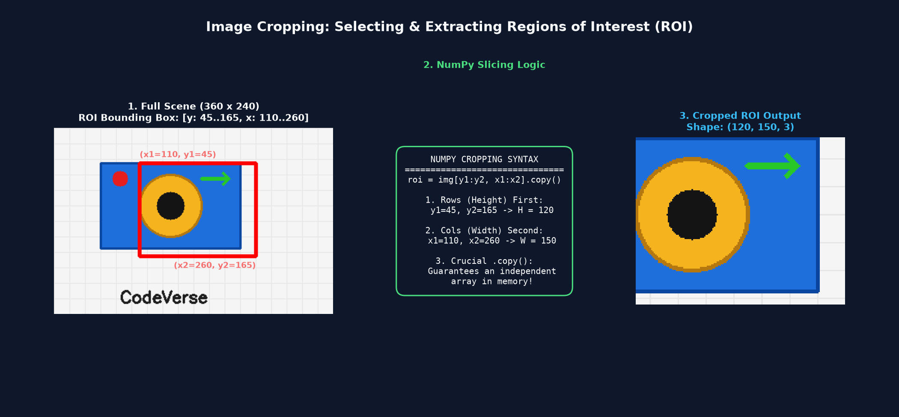
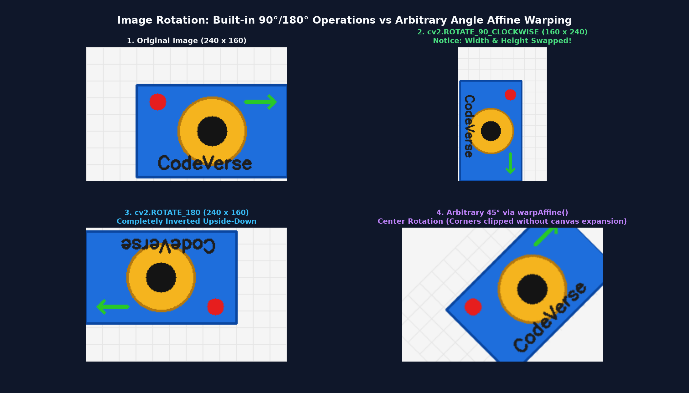

Master the three essential geometric transformations in OpenCV: resize images safely without squashing, preserve aspect ratios, crop Regions of Interest (ROI) with clean NumPy slicing, and perform right-angle and arbitrary-angle rotations.
Real-world photos alag-alag resolutions aur orientations mein aati hain — smartphone cameras 12 to 50 Megapixel ki heavy photos click karte hain, document scans aksar sideways (terhe) hote hain, aur profile pictures ke liye square crop chahiye hota hai.
Computer Vision pipelines (jaise Face Recognition ya Deep Learning classification) mein input image ko model ke anuroop prepare karne ke liye Geometric Transformations ka use kiya jata hai:
Heavy 4K images ko chota karna taaki processing speed fast ho sake, aur neural networks (jaise 224x224) ke liye uniform input size set karna.
Unwanted background ko hatakar sirf main subject (jaise insaan ka chehra ya number plate) par focus karna.
Sideways ya upside-down photographs ko seedha karna, aur Machine Learning training ke liye Data Augmentation create karna.
Humesha Aspect Ratio ka dhyan rakhein taaki image squashed (pichki hui) ya stretched (khinchi hui) na dikhe.
OpenCV mein image resize karne ke liye cv2.resize() function use hota hai. Lekin yahan OpenCV ka ek bohot bada gotcha hai jo har beginner ko confuse karta hai:
Resizing karne ke 2 methods:

Jab aap image ko chota ya bada karte hain, to grid ke naye pixels kaise calculate hote hain? Is mathematical estimate ko Interpolation kehte hain.
| Interpolation Flag | Speed | Visual Quality | Best Recommended Use-Case |
|---|---|---|---|
| cv2.INTER_LINEAR | Fast (Default) | Smooth Bilinear | General purpose resizing (standard default). |
| cv2.INTER_AREA | Fast | Moire-Free Anti-Aliasing | Shrinking (Downsampling) ke liye gold standard. |
| cv2.INTER_CUBIC | Moderate | Sharp Bicubic | Enlarging (Upsampling) ke liye highest quality. |
| cv2.INTER_NEAREST | Super Fast | Blocky / Pixelated | Segmentation masks aur pixel-art jahan naye color blend nahi chahiye. |

Aapne kai bar websites par aisi photos dekhi hongi jahan insaan ka chehra ajeeb sa pichka (squashed) ya lamba khincha (stretched) hua lagta hai. Yeh tab hota hai jab Aspect Ratio ignore kar diya jaye.
Proportional Resizing ka Simple Formula:
Agar aapko nayi Width (target_w) pata hai, to nayi Height aise calculate karein:
# Calculate new height while preserving original aspect ratio
h, w = img.shape[:2]
target_w = 150
ratio = target_w / float(w)
target_h = int(h * ratio)
# Resize proportionally
resized_clean = cv2.resize(img, (target_w, target_h), interpolation=cv2.INTER_AREA)
OpenCV mein image crop karne ke liye koi alag cv2.crop() function nahi hota. Kyunki OpenCV image ek NumPy array hai, hum direct Array Slicing use karte hain:

OpenCV mein rotation do tarike se ki ja sakti hai: built-in fast 90°/180° rotations ya custom angle affine warping.
Yeh functions direct matrix transpose aur flip use karte hain, isliye yeh ultra-fast aur lossless hote hain:
Agar aapko image ko kisi custom angle (jaise 30°, 45°, ya 60°) par ghumana ho, to hum Rotation Matrix banate hain:
# 1. Find center of the image
h, w = img.shape[:2]
center = (w // 2, h // 2)
# 2. Build 2D rotation matrix (center, angle_degrees, scale)
M = cv2.getRotationMatrix2D(center, 45, 1.0)
# 3. Apply affine warping
rotated_45 = cv2.warpAffine(img, M, (w, h), borderValue=(255, 255, 255))
Yeh script image ko smaller aur larger dimensions mein resize karti hai aur unke shapes verify karti hai.
import cv2
import numpy as np
# 1. Create a 200x300 synthetic test image
img = np.full((200, 300, 3), 200, dtype=np.uint8)
cv2.circle(img, (150, 100), 50, (0, 0, 255), -1)
# 2. Method A: Explicit output size dsize=(width, height)
shrunk = cv2.resize(img, (150, 100), interpolation=cv2.INTER_AREA)
enlarged = cv2.resize(img, (450, 300), interpolation=cv2.INTER_CUBIC)
# 3. Method B: Using scale factors fx, fy
shrunk_scale = cv2.resize(img, None, fx=0.5, fy=0.5, interpolation=cv2.INTER_AREA)
print("Original Shape: ", img.shape)
print("Shrunk (150x100): ", shrunk.shape)
print("Enlarged (450x300): ", enlarged.shape)
print("Shrunk (fx=0.5): ", shrunk_scale.shape)A reusable professional helper function jo image ko resize karte waqt aspect ratio hamesha preserve rakhti hai.
import cv2
import numpy as np
def resize_proportional(image, target_width=None, target_height=None, inter=cv2.INTER_AREA):
h, w = image.shape[:2]
if target_width is None and target_height is None:
return image
if target_width is None:
r = target_height / float(h)
dim = (int(w * r), target_height)
else:
r = target_width / float(w)
dim = (target_width, int(h * r))
return cv2.resize(image, dim, interpolation=inter)
# Test with 200x300 image (Aspect Ratio = 1.5)
test_img = np.zeros((200, 300, 3), dtype=np.uint8)
# Target width 150 -> Height should automatically become 100
clean_resize = resize_proportional(test_img, target_width=150)
print(f"Original: {test_img.shape} -> Proportional: {clean_resize.shape}")
print(f"Aspect Ratio Preserved: {clean_resize.shape[1] / clean_resize.shape[0]:.2f}")Target rectangular region ko crop karna aur uspar independent operations perform karna.
import cv2
import numpy as np
img = np.full((200, 300, 3), 100, dtype=np.uint8)
# Define crop boundaries
y1, y2 = 50, 150
x1, x2 = 100, 200
# Crop with .copy()
roi = img[y1:y2, x1:x2].copy()
print(f"Original Image Shape: {img.shape}")
print(f"Cropped ROI Shape: {roi.shape} (Height={y2-y1}, Width={x2-x1})")
# Save cropped result
cv2.imwrite("cropped_face.png", roi)Image orientation fix karna aur arbitrary rotation matrix apply karna.
import cv2
import numpy as np
img = np.zeros((200, 300, 3), dtype=np.uint8)
h, w = img.shape[:2]
# 1. 90 Degrees Clockwise
rot_90 = cv2.rotate(img, cv2.ROTATE_90_CLOCKWISE)
# 2. 180 Degrees Flip
rot_180 = cv2.rotate(img, cv2.ROTATE_180)
# 3. Arbitrary 45 Degrees around center
center = (w // 2, h // 2)
M = cv2.getRotationMatrix2D(center, 45, 1.0)
rot_45 = cv2.warpAffine(img, M, (w, h))
print(f"Original Shape: (H={h}, W={w})")
print(f"90° CW Shape: {rot_90.shape} (Width & Height Swapped!)")
print(f"180° Shape: {rot_180.shape}")
print(f"45° Affine: {rot_45.shape}")cv2.resize() mein pehla argument Width aur doosra Height hota hai. Agar aap img.shape ke hisaab se (h, w) pass kar denge to image ulati stretch ho jayegi!
Agar aap likhenge img[150:50, 200:100] jahan start index end index se bada hai, to NumPy empty array (0, 0, 3) return karega bina error diye!
cv2.warpAffine() usi canvas size (w, h) par rotate karta hai. Isliye 45° rotation par image ke chaaron kone cut (clip) ho jaate hain.
Image shrink karte waqt hamesha cv2.INTER_AREA use karein. Yeh moire patterns aur aliasing artifacts ko eliminate karta hai.